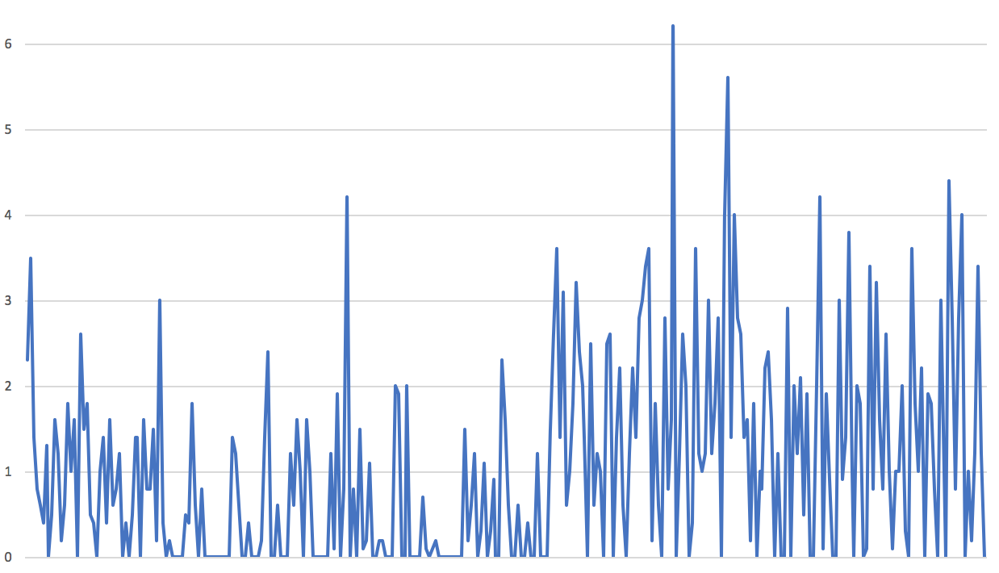

Most people grasp the truth of an assessment only when they unequivocally envision the evidence for it, something that our kludgy brains alone often can't do well.
2.3,3.5,1.4,0.8,0.6,0.4,1.3,0,0.5,1.6,1.2,0.2,0.6,1.8,1,1.6,0,2.6,1.5, 1.8,0.5,0.4,0,1,1.4,0.4,1.6,0.6,0.8,1.2,0,0.4,0,0.5,1.4,1.4,0,1.6,0.8, 0.8,1.5,0.2,3,0.4,0,0.2,0,0,0,0,0.5,0.4,1.8,0.6,0,0.8,0,0,0,0,0,0,0, 0,0,1.4,1.2,0.6,0,0,0.4,0,0,0,0.2,1.4,2.4,0,0,0.6,0,0,0,1.2,0.6,1.6, 1,0,1.6,1,0,0,0,0,0,0,1.2,0.1,1.9,0,0.8,4.2,0,0.8,0,1.5,0.1,0.2,1.1, 0,0,0.2,0.2,0,0,0,2,1.9,0,0,2,0,0,0,0,0.7,0.1,0,0.1,0.2,0,0,0,0,0,0, 0,0,1.5,0.2,0.6,1.2,0,0.3,1.1,0,0.3,0.9,0,0,2.3,1.6,0.6,0,0,0.6,0,0, 0.4,0,0,1.2,0,0,0,1.5,2.6,3.6,1.4,3.1,0.6,1,1.8,3.2,2.4,2,1.4,0,2.5, 0.6,1.2,1,0,2.5,2.6,0,1.4,2.2,0.6,0,1.2,2.2,1.4,2.8,3,3.4,3.6,0.2,1.8, 0.6,0,2.8,0.8,1.6,6.2,0,1.2,2.6,2,0,0.4,3.6,1.2,1,1.2,3,1.2,1.8,2.8,0, 4,5.6,1.4,4,2.8,2.6,1.4,1.6,0.2,1.8,0,1,0.8,2.2,2.4,1.6,0,1.2,0,0,2.9,0, 2,1.2,2.1,0.5,1.9,0,0,2,4.2,0.1,1.9,0.9,0,0,3,0.9,1.4,3.8,1,0,2,1.8,0,0.1, 3.4,0.8,3.2,1.6,0.8,2.6,1,0.1,1,1,2,0.3,0,3.6,1.8,1,2.2,0,1.9,1.8,0.8,0, 3,2,0,4.4,2.8,0.8,2.8,4,0,1,0.2,1.2,3.41.2,0
The graphic is about the numbers above, without the graphic we cannot find out how the data changes, but with the help of graphic, we can get the change of the data clearly.
From hierarchy of elementary perceptual tasks